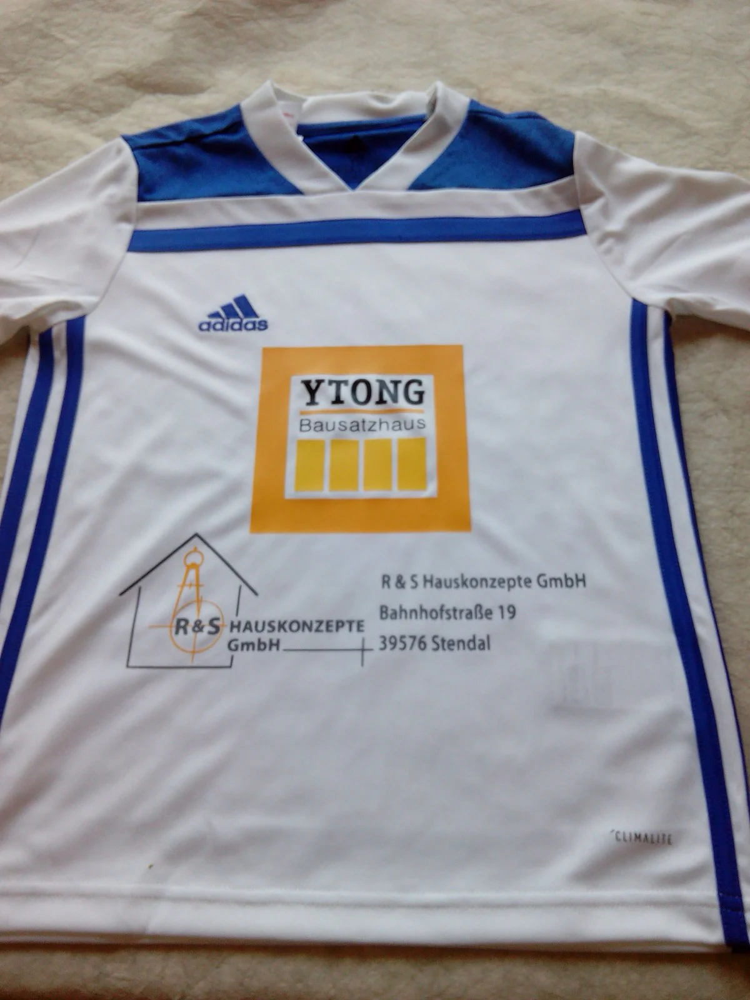
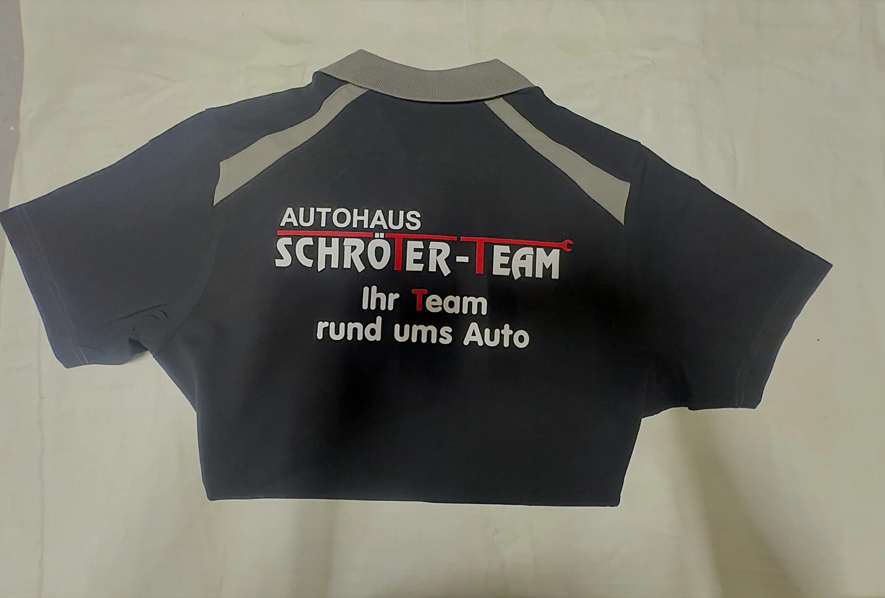
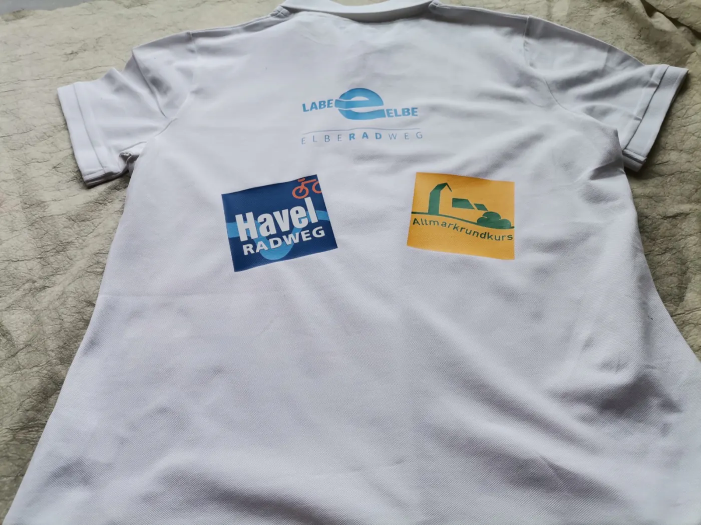
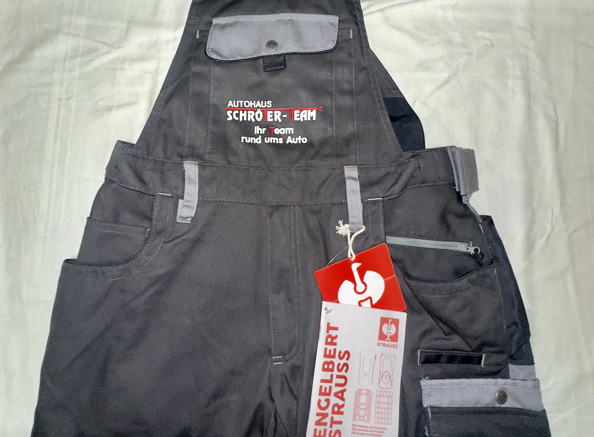

Textildruck in Stendal – Arbeitskleidung, Shirts & Trikots bedrucken
Flexdruck, Flockdruck und Sublimationsdruck für Arbeitskleidung, T-Shirts, Poloshirts, Vereinstrikots und Werbetextilien – farbintensiv, langlebig und schon ab dem Einzelstück.
Unsere Leistungen
Druckverfahren
- Flexdruck
- Flockdruck
- Sublimationsdruck
Bekleidung
- T-Shirts und Poloshirts
- Hoodies und Sweatshirts
- Arbeits- und Berufskleidung
- Warnschutzkleidung
Accessoires & Service
- Schürzen und Caps
- Taschen
- Gestaltung Ihres Motivs
- Einzelstücke und Serien
Referenzarbeiten




So läuft Ihr Textildruck-Auftrag ab
Motiv
Am besten schicken Sie Ihr Logo als Vektordatei. Liegt nur eine Bilddatei vor, zeichnen wir das Motiv nach.
Verfahren
Wir empfehlen Flex, Flock oder Sublimation – je nachdem, welches Motiv auf welches Textil kommt.
Freigabe
Vor der Produktion erhalten Sie den Entwurf zur Freigabe.
Fertigung und Übergabe
Vom Einzelstück bis zur Serie.
Textildruck in Stendal und der Altmark
Arbeitskleidung, Vereinstrikots und Shirts bedrucken wir in Stendal – für Betriebe, Vereine und Privatpersonen aus der gesamten Altmark, aus Tangermünde, Osterburg, Havelberg, Gardelegen, Salzwedel und Magdeburg.
Häufige Fragen zum Textildruck
Bieten Sie auch Stickerei oder Siebdruck an?
Nein, Stickerei und Siebdruck gehören nicht zu unserem Angebot. Wir veredeln Textilien mit Flexdruck, Flockdruck und Sublimationsdruck – vom Einzelstück bis zur Serie.
Worin unterscheiden sich Flex, Flock und Sublimation?
Flexdruck ergibt eine glatte, elastische Oberfläche mit kräftigen Farben und scharfen Konturen – die übliche Wahl für Schriftzüge, Nummern und Logos. Flockdruck fühlt sich samtig an und wirkt hochwertiger, trägt aber etwas auf. Sublimationsdruck bringt vollflächige Motive direkt ins Gewebe, funktioniert aber nur auf dafür geeigneten Textilien.
Ab welcher Stückzahl lohnt sich das?
Wir fertigen vom Einzelstück bis zur kompletten Serie. Ein einzelnes Vereinstrikot ist genauso möglich wie die Arbeitskleidung für den ganzen Betrieb.
Was brauchen Sie für die Gestaltung?
Am besten Ihr Logo als Vektordatei, damit die Konturen sauber geschnitten werden können. Liegt nur eine Bilddatei vor, zeichnen wir das Motiv für Sie nach.